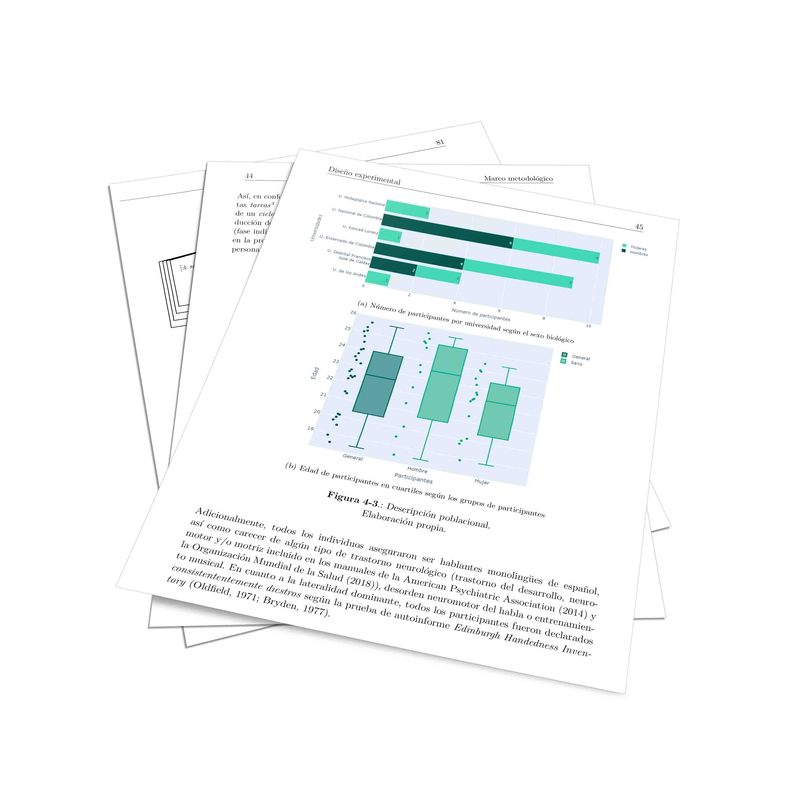

<div id="ajax-page" class="ajax-page-content">
    <div class="ajax-page-wrapper">
        <div class="ajax-page-nav">
            <div class="nav-item ajax-page-close-button">
                <a id="ajax-page-close-button" href="#"><i class="lnr lnr-cross"></i></a>
            </div>
        </div>

        <div class="ajax-page-title">
            <h1>Electrofisiología cerebral y fijaciones oculares durante el proceso de producción articulatoria de los rasgos vocálicos del español</h1>
        </div>

        <div class="row">
            <div class="col-sm-8 col-md-8 portfolio-block">
                <div class="owl-carousel portfolio-page-carousel">
                    <div class="item">
                        
                    </div>
                    <div class="item">
                        
                    </div>
                    <div class="item">
                        
                    </div>
                </div>

                <script type="text/javascript">
                    jQuery(document).ready(function($){
                        $('.portfolio-page-carousel').imagesLoaded(function(){
                            $('.portfolio-page-carousel').owlCarousel({
                                smartSpeed:1200,
                                items: 1,
                                loop: true,
                                dots: true,
                                nav: true,
                                navText: false,
                                margin: 10,
                                autoHeight:true
                            });
                        });
                    });
                </script>
            </div>

            <div class="col-sm-4 col-md-4 portfolio-block">
                <!-- Project Description -->
                <div class="project-description">
                    <div class="block-title">
                        <h3>Descripción</h3>
                    </div>
                    <ul class="project-general-info">
                        <li><p><i class="fas fa-bookmark"></i> Tesis de grado</p></li>
                        <li><p><i class="fa fa-user"></i> Alejandro Montenegro Taborda</p></li>
                        <li><p><i class="fas fa-university"></i> Universidad Nacional de Colombia</a></p></li>
                        <li><p><i class="fa fa-calendar"></i> 14 febrero, 2020</p></li>
                    </ul>

                    <p class="text-justify">Trabajo de grado investigativo presentado como requisito parcial para optar al título de lingüista.</p>
                    <!-- /Project Description -->

                    <!-- Technology -->
                    <div class="tags-block">
                        <div class="block-title">
                            <h3>Palabras clave</h3>
                        </div>
                        <ul class="tags">
                            <li><a>Neurociencia social</a></li>
                            <li><a>Teoría de rasgos</a></li>
                            <li><a>Fonética articulatoria</a></li>
                            <li><a>Vocales</a></li>
                            <li><a>Electroencefalografía</a></li>
                            <li><a>EEG</a></li>
                            <li><a>Seguimiento ocular</a></li>
                        </ul>
                    </div>
                    <!-- /Technology -->

                </div>
                <!-- Project Description -->
            </div>
        </div>
    </div>
</div>
